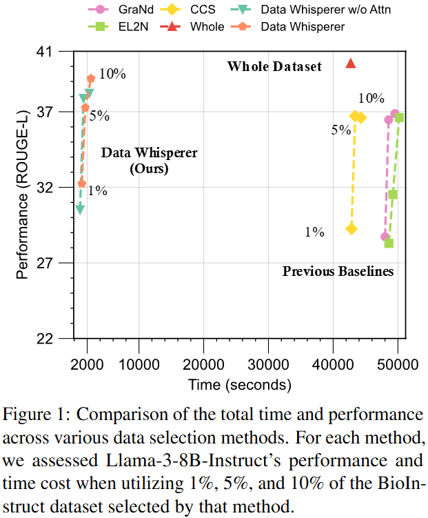
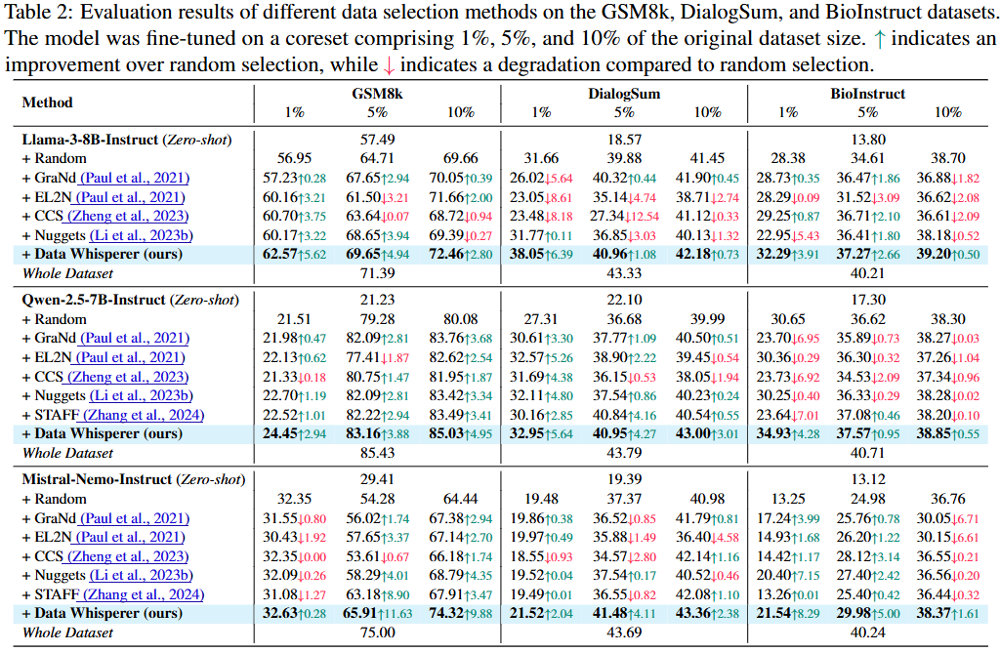
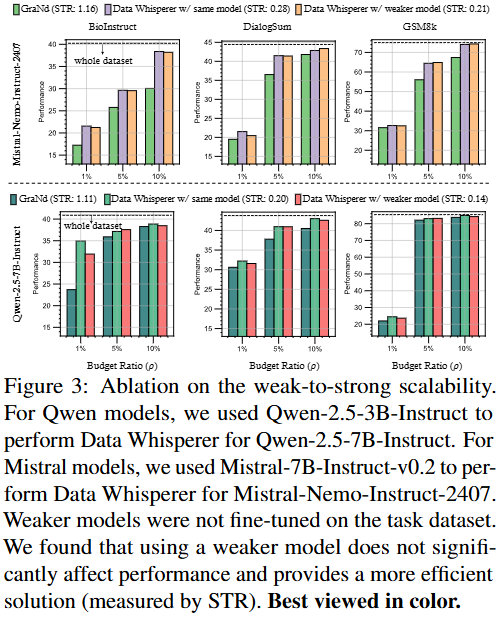

Data Whisperer: Efficient Data Selection for Task-Specific LLM Fine-Tuning via Few-Shot In-Context Learning
Shaobo Wang1,2,*
Xiangqi Jin2,*
Ziming Wang2,3,*
Jize Wang1
Jiajun Zhang2
Kaixin Li4
Zichen Wen2
Zhong Li5
Conghui He6
Xuming Hu7
Linfeng Zhang1,2,✉
1Shanghai Jiao Tong University
2EPIC Lab, Shanghai Jiao Tong University
3Nanyang Technological University
4National University of Singapore
5Microsoft Research Asia
6Shanghai AI Laboratory
7Hong Kong University of Science and Technology (Guangzhou)
*Equal contribution
✉Corresponding author
Emails: shaobowang1009@sjtu.edu.cn
zhanglinfeng@sjtu.edu.cn
 Paper
Paper
 arXiv
arXiv
 GitHub
GitHub
 (I) **Few-shot In-Context Learning.**
A set of demonstration and query examples is randomly sampled from the initial dataset, and an ICL prompt is constructed with a fixed instruction. The LLM to be fine-tuned generates answers for all query examples, and the average evaluation score is computed using the ground truth answers.
(II) **Context-Aware Weighting.**
During each iteration of few-shot ICL, we weight the scores of the demonstration examples based on their attention scores, which quantify their influence on the queries.
(I) **Few-shot In-Context Learning.**
A set of demonstration and query examples is randomly sampled from the initial dataset, and an ICL prompt is constructed with a fixed instruction. The LLM to be fine-tuned generates answers for all query examples, and the average evaluation score is computed using the ground truth answers.
(II) **Context-Aware Weighting.**
During each iteration of few-shot ICL, we weight the scores of the demonstration examples based on their attention scores, which quantify their influence on the queries.
Takeaways
1
Selection-to-Tuning Ratio. We critically examine existing data selection approaches and introduce the Selection-to-Tuning Ratio, a novel metric that quantifies the efficiency of these methods. We observed that all prior data selection methods are more inefficient than finetuning the LLM with the entire dataset.
2
Data Whisperer. We propose Data Whisperer, an effective, training-free and attention-based method. Unlike previous approaches, our method eliminates the need to fine-tune a separate scoring model on the target dataset, ensuring greater efficiency.
3
Compatibility with Weak-to-Strong Few-shot ICL. Data Whisperer integrates seamlessly with weak-to-strong few-shot ICL schemes, enabling effective performance even when a weaker model within the same model family is employed for ICL. This enhances both the scalability and efficiency of our method.
4
Experimental Validation. Comprehensive experiments are conducted on both real and synthetic datasets across various selection budget ratios, including BioInstruct, DialogSum, and GSM8K. We observe that Data Whisperer consistently outperforms previous SOTA methods, particularly in smaller data scenarios, while achieving faster selection times.
Selection-to-Tuning Ratio
We first critically reevaluate the effectiveness of existing selection methods. To quantitatively and fairly assess the effectiveness of each method, we introduce the $\textit{Selection-to-Tuning Ratio}$ (STR), which is defined as the ratio of time spent on selection to the time required for fine-tuning the model on the entire dataset. Formally, let $t_p(\tau,\rho)$ represent the time associated with a selection method $\tau$ with a budget subset ratio $\rho$, and let $t_{ft}$ denote the corresponding fine-tuning time for the entire dataset. The STR is given by:
$$
\text{STR}(\tau) = \frac{t_p(\tau,\rho)}{t_{ft}}.
$$


Experimental Validation
Compared to SOTA methods, Data Whisperer demonstrates consistent superiority across varying dataset sizes. On real datasets, as illustrated in Table 2, Data Whisperer achieves higher accuracy. For instance, on 10% data of DialogSum with Qwen-2.5-7B-Instruct, Data Whisperer attains an accuracy of 43.00, surpassing the previous SOTA method, STAFF, by a significant margin of 2.46.

Similarly, on synthetic datasets, as shown in Table 3, Data Whisperer consistently delivers the best performance across all evaluated models and data proportions, underscoring its robust generalization capabilities. Notably, with the Qwen-2.5-7B-Instruct model on 5% of the data, Data Whisperer achieves an accuracy of 31.27, outperforming the prior SOTA method, Nuggets, by a remarkable 2.87 points.

Compatibility with Weak-to-Strong Few-shot ICL
We also investigated the impact of weak-to-strong scoring, where a weaker model is used to select data for fine-tuning a stronger model. As shown in Figure 3, results indicate that using a weaker model does not significantly impact the overall performance of Data Whisperer, while providing a more efficient solution with a lower STR. It demonstrates that Data Whisperer is scalable across different model sizes and highlights its potential for efficient fine-tuning, even with limited computational resources.

Discussions
1. Low-perplexity majority samples (i.e., easy examples) may play a key role in explaining why SFT improves task performance in low-data regimes.
2. Unlike general pretraining, task-specific fine-tuning aims to extract and refine task-relevant patterns. Consequently, SFT-selected subsets tend to consist of a mix skewed toward low-perplexity, high-confidence tokens, whereas the full dataset includes both predictable and ambiguous examples.
3. In SFT, data selection may be biased, as it favors easier samples with low token entropy. In contrast, training on more diverse or challenging samples might enhance generalization but risks instability when data is scarce. Thus, selecting easy data effectively promotes alignment with task objectives in high-confidence regions of the data distribution.
BibTeX
```latex
@article{wang2025datawhisperer,
title = {Data Whisperer: Efficient Data Selection for Task-Specific LLM Fine-Tuning via Few-Shot In-Context Learning},
author = {Wang, Shaobo and Jin, Xiangqi and Wang, Ziming and Wang, Jize and Zhang, Jiajun and Li, Kaixin and Wen, Zichen and Li, Zhong and He, Conghui and Hu, Xuming and Zhang, Linfeng},
year = {2025},
journal = {Annual Meeting of the Association for Computational Linguistics},
}
```